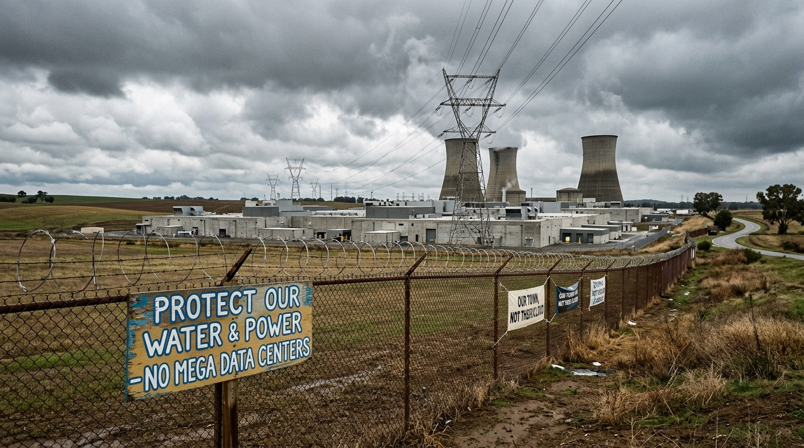
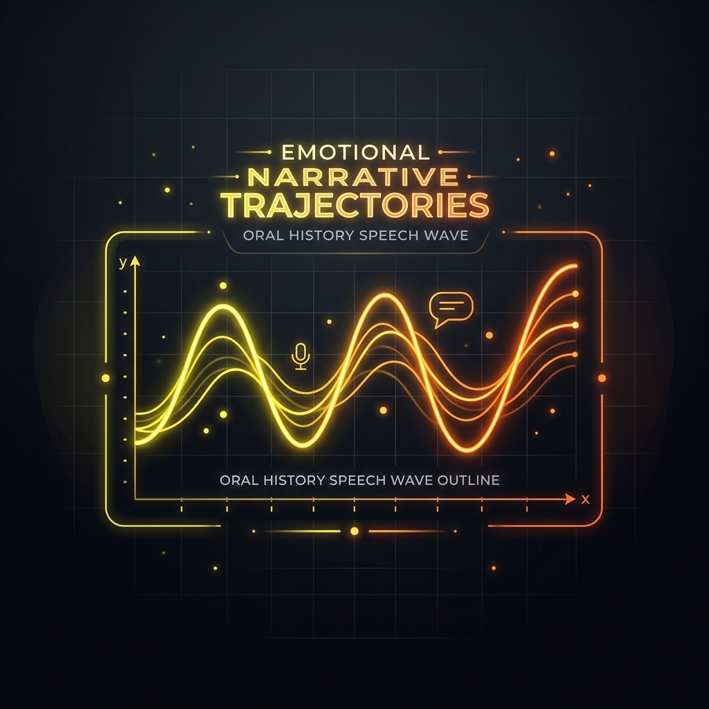
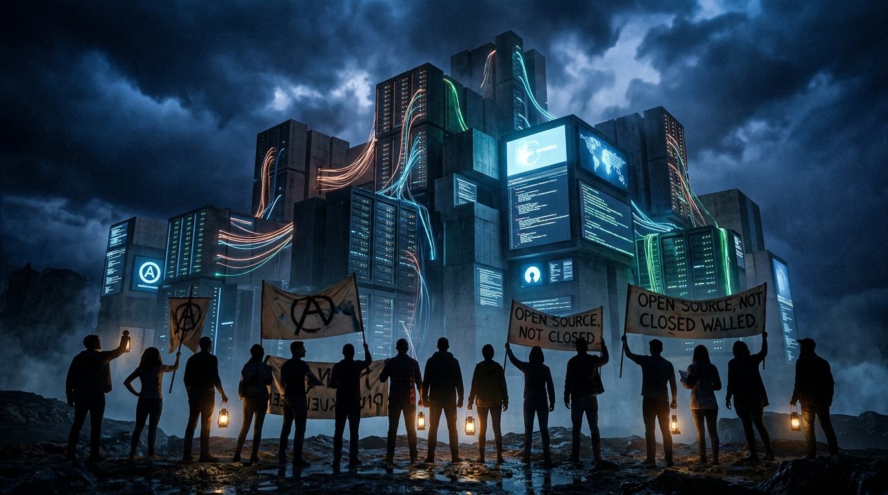
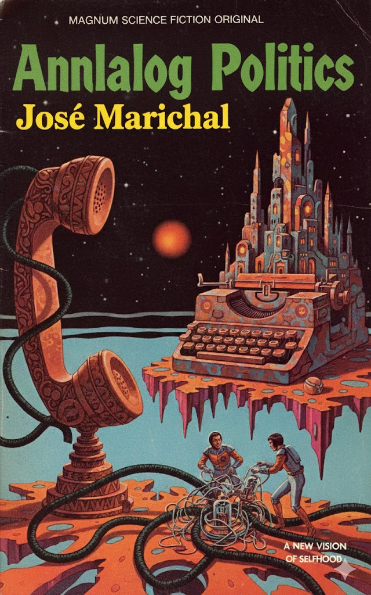
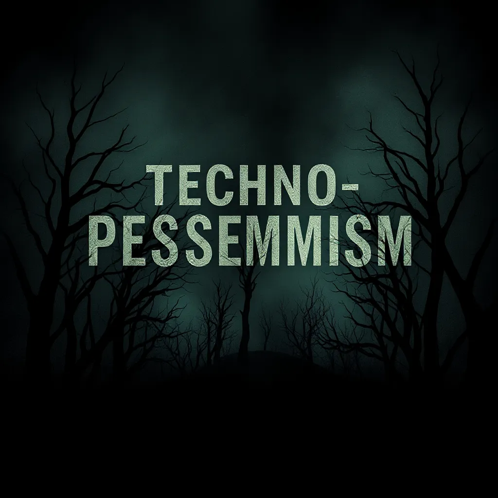
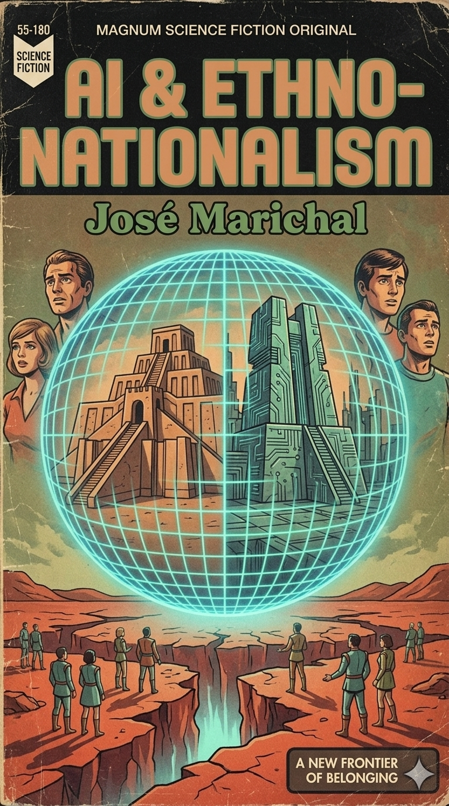

Technology and Society Working Group
Civic Agency, Democratic Innovation & Critical Scrutiny
The Technology and Society Working Group is an interdisciplinary research hub dedicated to examining how artificial intelligence is restructuring social, economic, and political institutions. We operate at the vital intersection of constructive civic innovation and critical inquiry. On one hand, our research investigates how agentic AI and computational tools can be harnessed to promote the common good—empowering undergraduates and community partners to build living civic infrastructure, advance participatory governance, and deepen public policy deliberation. On the other hand, we actively develop critical frameworks addressing the systemic costs of generative AI: from the unsustainable water and energy consumption of planetary-scale data centers, to extractive data colonialism, algorithmic surveillance, and the erosion of democratic agency.
The Technology and Society Working Group is convened by Dr. Jose Marichal. Students and collaborators interested in joining can contact him at marichal@callutheran.edu.
Proposed or Ongoing Projects
Flock Cameras in Low-Income Communities
An interlocking research ecosystem examining how automated license plate readers (ALPR) monitor marginalized neighborhoods, bridging national council transcript mining and Census ACS cross-tabs with street audits, investigative podcasts, and community FOIA zines.
Explore Research Ecosystem →
Data & Methods Portal •
Explore N=500 ALPR Simulation

Rhetoric of Data Centers and Causal Stories
An interlocking research ecosystem bridging computational fuzzy-set QCA narrative modeling with city council public testimony transcripts (N=1,137), acoustic fieldwork, investigative audio podcasts, and community zoning zines across 428 US municipal moratoriums.
Explore Research Ecosystem →
Data & Methods Portal •
Launch QCA Simulator •
Testimonies (N=1,137) ↓
Deepfake AI's Impact on Political Campaigns
An interlocking research ecosystem auditing how partisan influencers generate synthetic "slopaganda" outside formal FEC ad regimes, combining YouTube video harvesters, battleground Reddit analysis, voice clone forensics, and 28-state disclaimer laws.
Explore Research Ecosystem →
Explore 2026 Dataset & Methodology Portal →
Performative Authenticity on Social Media
Investigating how state legislative candidates stage, perform, and negotiate authenticity across short-form video platforms (TikTok and Instagram Reels). Bypassing API visual limitations, this archive preserves 745 general-election campaign-window videos across 54 unique candidates in CA, FL, CO, AZ, and CT for human rubric coding across four authenticity strategies (Relinquished Control/UGC, Trend-Jacking, Informational, and Polished Promotional).
Explore Dataset & Methodology Portal →
Interactive Coding Sheet •
Download Dataset (745 Videos) ↓

Narrative Presentation of AI in Congressional hearings
A computational policy discourse and narrative framing analysis of artificial intelligence deliberation across the 118th and 119th United States Congresses. Analyzing 4,198 substantive AI speech turns across 805 hearing transcripts, this project maps Deborah Stone's four causal stories (mechanical, inadvertent, intentional, accidental) against partisan alignments, committee jurisdictions, and witness sector testimony.
Explore Research Portal & Speech Explorer →
Hearings Metadata (N=805) ↓ •
Causal Coding Sample (N=200) ↓

Technofeudalism and Political Resistance
Theorizing the transformation of digital capitalism into cloud-based technofeudalism. Analyzes how proprietary planetary compute and foundation models extract rent from civic institutions, while formulating strategies for political resistance: data cooperatives, public compute utilities, and open civic protocols.

Analog Politics
Can going analog become a social movement? Investigating tactile resistance, offline civic organizing, and theoretical alternatives to pervasive algorithmic mediation.
Unaccountable AI
Should we let AI go rogue? Interrogating runaway autonomous systems, institutional abdication of human discretion, and opaque automated moderation—featuring an empirical study of 429 Meta/Facebook page takedown reports across Google News RSS, Reddit, and Bluesky.

Techno-Pessimism
Are we better off not expecting too much from AI? A philosophical critique of techno-optimism and modern silicon salvation narratives in democratic institutions.
Pluralist AI
Can AI make democracy more, not less expansive? Exploring pluralistic alignment architectures, deliberative polling, and computational mechanisms designed for agonistic consensus rather than monocultural convergence.

AI & Ethno-Nationalism
Do AI platforms reinforce or correct racist and ethno-nationalist views?
Civic Digital Twinning
How can virtual city replicas serve as democratic digital commons rather than top-down optimization dashboards? Examining participatory urban digital twins (pioneered in Bologna, Barcelona, and Helsinki) that fuse qualitative citizen lived experience with spatial data to co-design climate resilience, heat mitigation, and transit equity.
Cloud Rent & Platform Monopolies
Investigating how dominant digital intermediaries extract economic tolls without creating underlying value. Analyzes the 51–60% Amazon merchant fee take-rates, $80B+ pay-to-play search placement auctions, Most Favored Nation (MFN) price-parity traps, and state-level antitrust remedies (e.g., California's COMPETE Act).
Idea to Civic App Pipeline
A structured 4-phase mentorship framework empowering undergraduate researchers to shift from passive learners to active civic innovators: moving from NotebookLM problem formulation and Deep Research benchmarking to rapid agentic coding with Antigravity and rigorous AI-assisted stress-testing.
Stakeholder Policy Analyst (N=500 Simulation)
A double-blind, orthogonal 500-run Monte Carlo experiment testing which of Deborah Stone's 10 causal stories and symbolic devices can overcome consent-calendar momentum to terminate a municipal ALPR surveillance contract across Sabatier ACF coalitions.